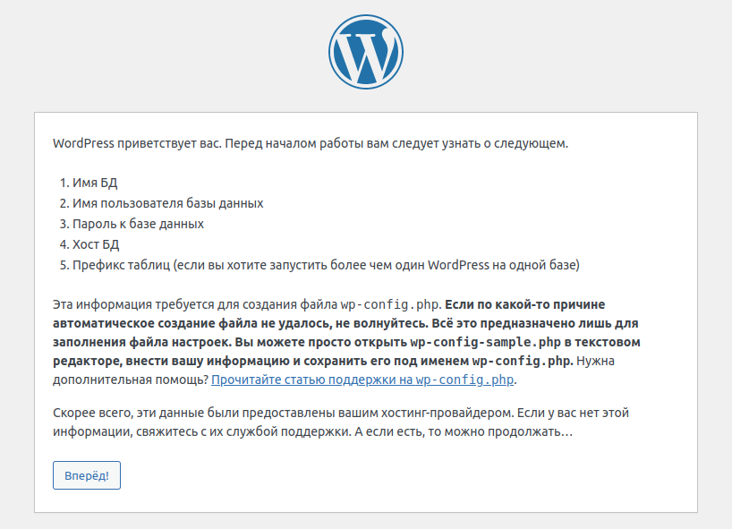

Установка и настройка Wordless
Wordless - это микро-фреймворк для разработки пользовательских тем, который представляет из себя плагин для WordPress и содержит стартовую тему. Wordless значительно ускоряет и улучшает создание пользовательских тем. Перечислим особенности Wordless:
- Создание новых тем с помощью WP-CLI
- Написание шаблонов PHP с помощью языка шаблонов PUG
- Написание таблиц стилей CSS, используя синтаксис SCSS
- Написание логики Javascript, используя синтаксис ES2015
- Предварительно настроенная поддержка перехватчика сообщений MailHog.
- Поддержка WebPack, BrowserSync (с живой перезагрузкой), WP-CLI, Yarn.
Скомпилированная тема будет работать на любой стандартной инсталляции Wordpress.
Wordless не изменяет никаких основных функциональных возможностей, поэтому он совместим практически с любым плагином.
Дальше мы будем исходить из того, что у вас не установлена WordPress.
Вы можете установить Wordless и WordPress одним махом. Для этого, вам нужно установить Wordless, а он автоматически установит все необходимое, в том числе и WordPress. Есть официальное руководство, как выполнить такую установку. Однако, мне не удалось пройти этот квест до конца, так как постоянно возникали какие-либо ошибки. Это и послужило поводом написать эту статью.
Другой вариант, который рассматривается в этой статье, сначала устанавливается и настраивается WordPress, а затем добавляется и настраивается Wordless.
Первым делом установим WP-CLI
WP-CLI
WP-CLI - это интерфейс командной строки для WordPress. С помощью WP-CLI можно обновлять плагины, настраивать многосайтовые установки и многое другое, не используя веб-браузер. На странице WP-CLI Commands приведен список всех доступных в настоящее время команд WP-CLI со ссылками на документацию по использованию и подкомандам. На странице WP-CLI Handbook находится список полезных руководств и ресурсов по использованию WP-CLI.
С помощью утилиты curl загрузим файл wp-cli.phar, для этого в терминале введем следующее:
curl -O https://raw.githubusercontent.com/wp-cli/builds/gh-pages/phar/wp-cli.phar
Файл загрузится в 'Домашнюю папку'.
Затем проверим работоспособность файла wp-cli.phar:
php wp-cli.phar --info
Чтобы использовать WP-CLI из командной строки, набирая команду wp, сделаем файл исполняемым и переместим его куда-нибудь из домашней папки. Например:
chmod +x wp-cli.phar
sudo mv wp-cli.phar /usr/local/bin/wp
Теперь проверим, как работает WP-CLI:
wp --info
Будет выведена информация, похожая на эту:
OS: Linux 5.15.0-52-generic #58~20.04.1-Ubuntu SMP Thu Oct 13 13:09:46 UTC 2022 x86_64
Shell: /bin/bash
PHP binary: /usr/bin/php7.4
PHP version: 7.4.3
php.ini used: /etc/php/7.4/cli/php.ini
MySQL binary: /usr/bin/mysql
MySQL version: mysql Ver 8.0.30-0ubuntu0.20.04.2 for Linux on x86_64 ((Ubuntu))
SQL modes:
WP-CLI root dir: phar://wp-cli.phar/vendor/wp-cli/wp-cli
WP-CLI vendor dir: phar://wp-cli.phar/vendor
WP_CLI phar path: /home/user
WP-CLI packages dir:
WP-CLI cache dir: /home/user/.wp-cli/cache
WP-CLI global config:
WP-CLI project config:
WP-CLI version: 2.7.1
Установка WordPress на localhost
Загрузите последнюю версию WordPress с официального сайта, либо его русифицированную версию.
Распакуйте скачанный архив в Домашнюю папку. В результате появится каталог wordpress, который переименуйте в wp2 (имя wp2 короче, чем wordpress).
Для WordPress требуется база данных MySQL. Вы можете проверить, установлена ли MySQL в вашей системе, а также увидеть дополнительную информацию:
sudo service mysql status
Руководство по установке MySQL находится здесь.
После установки MySQL нужно создать базу данных для будущего локального сайта wp2. Войдите в консоль сервера MySQL как root-пользователь:
sudo mysql -u root
Появится строка с приглашением mysql>, в эту строку введите следующее:
CREATE DATABASE wp2;
На сервере MySQL будет создана база данных wp2.
Также, на сервере MySQL создайте пользователя с именем, под которым вы зарегистрированы в вашей операционной системе. Для дальнейших примеров пусть это будет пользователь с именем user:
CREATE USER user@localhost IDENTIFIED BY '';
Предоставьте пользователю user привилегии на чтение, вставку, обновление, удаление, создание и изменение во всех таблицах базы данных wp2 с локального хоста:
GRANT SELECT,INSERT,UPDATE,DELETE,CREATE,DROP,ALTER ON wp2.* TO user@localhost;
и рекомендуется еще перечитать привилегии:
FLUSH PRIVILEGES;
Выйдите из консоли MySQL:
exit
Запустите на, всякий случай, сервер MySQL:
sudo service mysql start
Сделайте каталог wp2 рабочим:
cd wp2
Обычно, для установки WordPress на локальный сервер используют LAMPP, XAMPP или что-то еще. Однако, благодаря WP-CLI у нас есть возможность запускать встроенный сервер командой wp server, что мы и сделаем:
wp server
Должна появиться строка примерно такого вида:
[Fri Oct 28 20:24:07 2022] PHP 7.4.3 Development Server (http://localhost:8080) started
- Теперь, откройте браузер и перейдите по ссылке http://localhost:8080. Откроется следующее окно:

- Нажмите кнопку
Вперед!Появится следующее окно, в котором заполните поля согласно скриншоту:

- Нажмите кнопку
Отправить, появится следующее окно:
- Нажмите кнопку
Запустить установку, появится форма, в которой введите название сайта и данные администратора согласно скриншоту:
- Нажмите кнопку
Установить WordPress, появится следующее окно:

- Нажмите кнопку
Войти!. Появится форма ввода пароля, в которую введите данные согласно скриншоту:
- Нажмите кнопку
Войти. Вы войдете в Консоль административной панели WordPress.
Можно считать, что WordPress установлен и настроен. Теперь остановите сервер в терминале клавишами Ctrl+C и закройте окно терминала.
Установка Node, NVM, Yarn, Ruby
Каждая версия Wordless работает с определенной версией Node. Последний Wordless версии 2.2.0 требует для своей работы Node v14.15.3.
В вашей системе, скорее всего, установлен Node другой версии. Чтобы убедиться в этом, откройте новое окно терминала и введите следующую команду:
node -v
будет выведена версия Node, установленная в вашей системе.
Чтобы легко устанавливать и переключаться между различными версиями Node, воспользуйтесь менеджером NVM. Проверьте, установлен ли NVM в вашей системе:
nvm -v
Если NVM установлен, то будет показан номер версии, либо будет выдано сообщение, что команда не найдена. Тогда установите NVM с помощью утилиты curl:
curl -o- https://raw.githubusercontent.com/nvm-sh/nvm/v0.39.2/install.sh | bash
Теперь, с помощью NVM установите Node v14.15.3:
nvm install 14.15.3
Указанная версия Node была установлена и сделана рабочей. Более подробно читайте Управление версиями Node.js и NPM с помощью NVM.
Рекомендуется, также, установить Yarn. Это легко сделать командой NPM:
npm i -g yarn
Для того, чтобы установить Wordless требуется язык Ruby. Проверьте наличие этого языка в системе:
ruby -v
Если язык установлен, то будет выведена запись, похожая на эту:
ruby 2.7.0p0 (2019-12-25 revision 647ee6f091) [x86_64-linux-gnu]
Если язык не установлен, то будет выведено сообщение, что команда не найдена. Тогда установите Ruby. В Ubuntu это делается так:
sudo apt-get install ruby-full
Установка для других систем приведена на этой странице.
Установка Wordless
Теперь установите из репозитория Ruby пакет wordless:
sudo gem install wordless
Сделайте каталог wp2 рабочим:
cd wp2
Установите и активируйте плагин Wordless:
wp plugin install --activate wordless
Создайте новую тему c именем mytheme:
wp wordless theme create mytheme
В каталоге /wp2/wp-content/themes будет создан каталог mytheme с только что созданной темой. Сделайте этот каталог рабочим:
cd wp-content/themes/mytheme
Настройте остальные необходимые инструменты:
yarn install
Затем, запустите сервер:
yarn run server
Откроется окно браузера по адресу http://localhost:3000/. Если же открыть сайт по адресу http://localhost:8080/, то данная страница будет стилизована.
Перейти в панель администратора можно по адресу http://localhost:8080/wp-admin/ и http://localhost:3000/wp-admin/
Пользовательский интерфейс Browsersync: http://localhost:3001